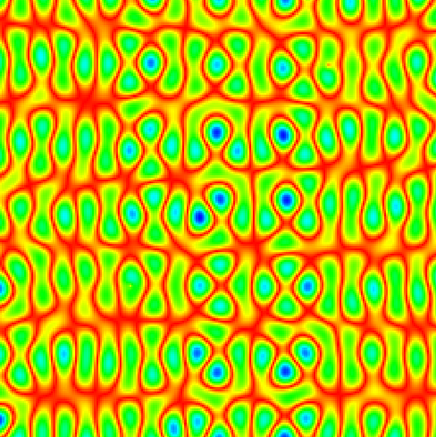
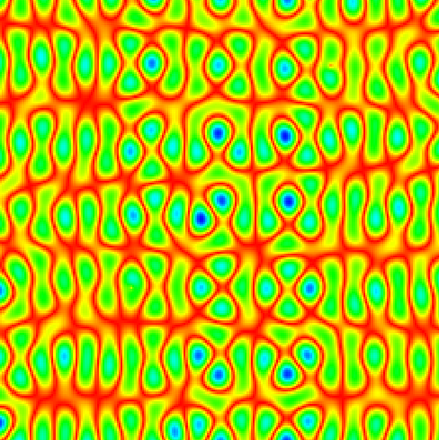

Using parameters such as simulation size, reflections, wave frequency, and decay, various standing waves can be generated.
After developing multiple user interfaces to interact with the algorithm, I compared my results to the inspiration behind this project, namely, the paper titled
Exploiting Modern Chladni Plates to Analogously Manifest the Point Interaction
While my simulation yields results similar to those presented in the paper, it's important to note that, being a simulation, the propagation of the medium occurs in a somewhat different manner.
 
